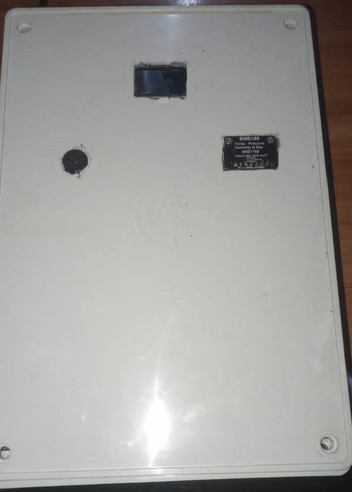

Smart Air Quality Monitoring System
Role: Final-Year Project Team Member contributed to development, hardware prototyping, sensor calibration, cloud telemetry, testing, and technical documentation.
An end-to-end IoT environmental monitoring station engineered to collect real-time readings of hazardous atmospheric pollutants, stream telemetry wirelessly via Wi-Fi, persist historical logs to cloud platforms, and deliver threshold-based alerts to mobile users.
Problem It Addresses
Poor ambient and indoor air quality poses severe health hazards. Conventional monitoring stations are prohibitively expensive and localized data is rarely accessible to vulnerable individuals. This project delivers an accessible, low-cost telemetry solution.
Purpose & Objective
To architect a robust IoT system utilizing an ESP32 microcontroller and multiple environmental gas sensors that autonomously measures pollutant indices, synchronizes with ThingSpeak and Firebase cloud databases, and triggers instant alerts when danger thresholds are exceeded.